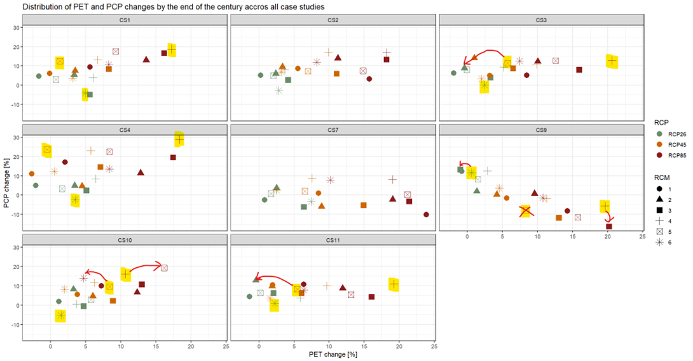
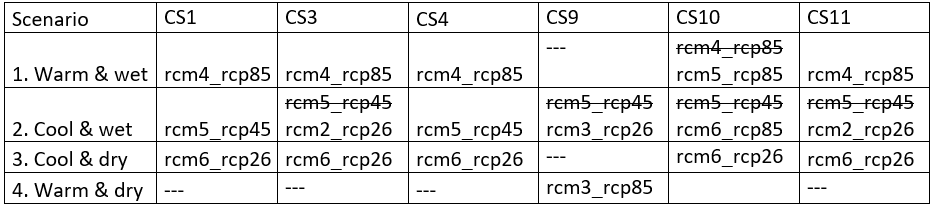
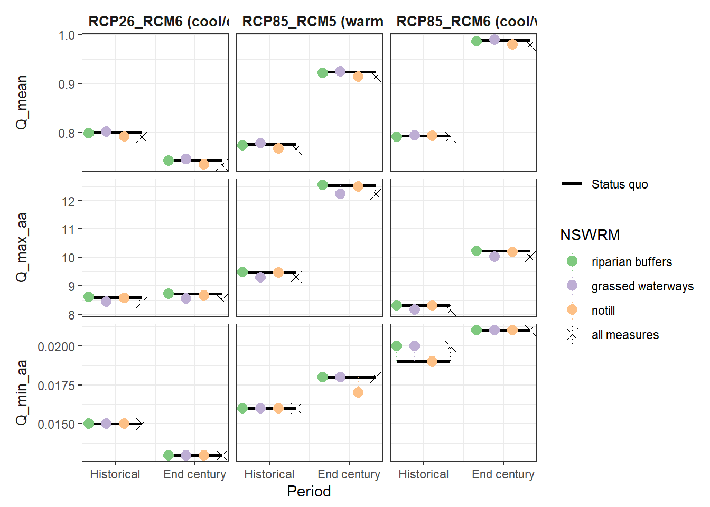
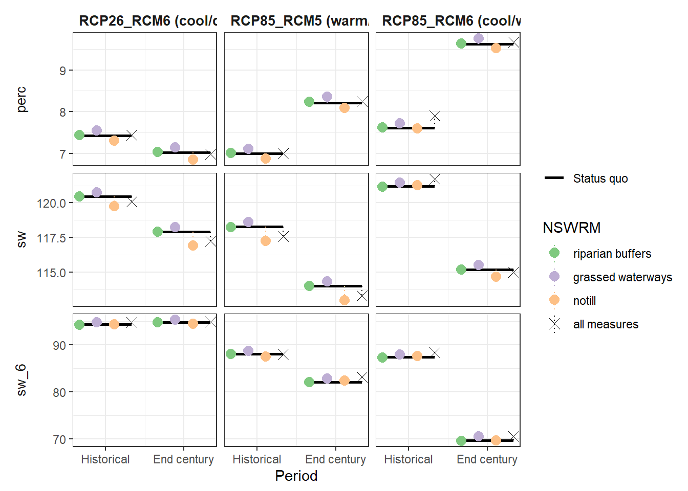
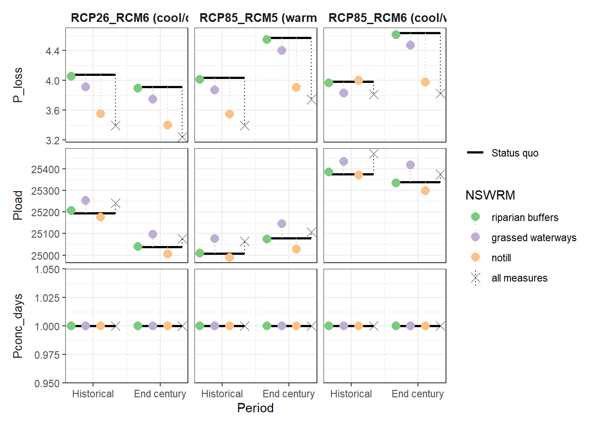
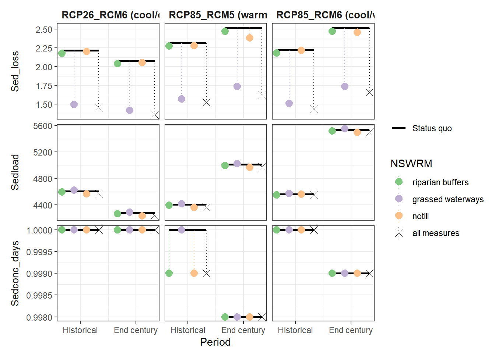
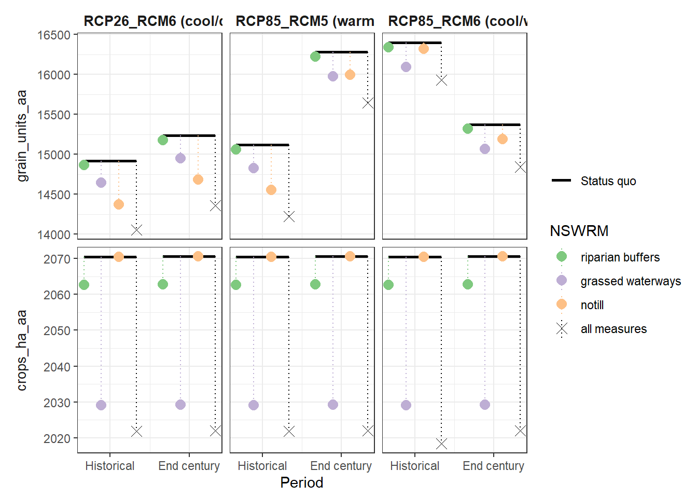
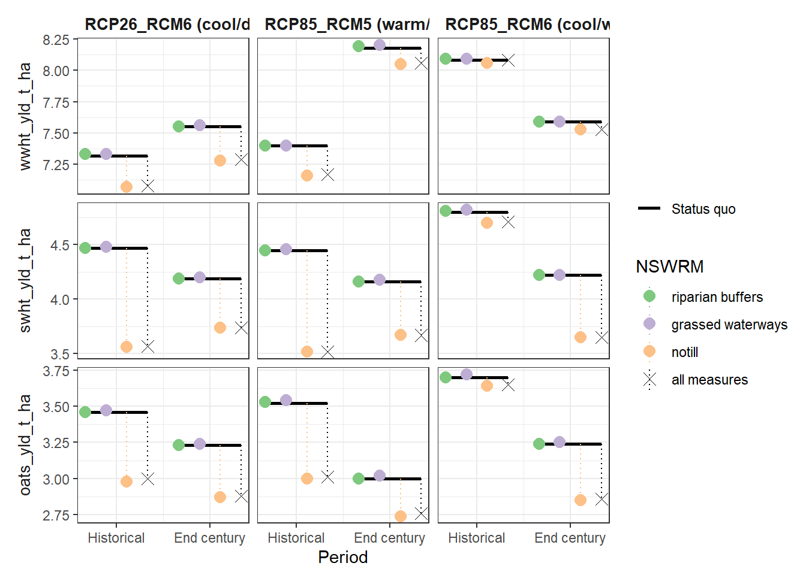

Section 23 Combined Measure and Climate Scenarios
23.1 Preperation
workflow from Micha (2024-09-16)s
23.1.1 Selection of RCM-RCP combinations
To limit the modelling effort and for illustrative purposes, 3-4 markedly different climate scenarios should be selected from the ensemble of available RCP-RCM combinations based on projected changes in temperature and precipitation by the end of the century (e.g. a ‘cool & dry’, ‘cool & wet’, ‘warm & wet’, ‘warm & dry’). The term ‘cool’ refers to low levels of warming, as all available scenarios project rising temperatures. Mikolaj did such an analysis for CS1. An easy option would be to use this selection (rcp26-rcm6: cool & dry, rcp45-rcm5: cool & wet, rcm85-rcm4: warm & wet, no scenario was found representing warm & dry), better would be to do the same analysis for your case study - please ask Mikolaj for more details.
Update: Mikolaj has done this for us, and has found the following:


notill_fut: I think that the “cool&dry” scenario can works well, but the other two should be changed.
23.1.2 Copy your measr_scenario_simulation folder n-times
Create n copies of your measr_scenario_simluation workflow folder, where n is the number of climate scenarios (selected in step 1) multiplied by 2. Each climate scenario must have its own reference for the historical period (_H). Rename the folders accordingly, e.g.:
- measr_scenario_simulation_rcp26_rcm6_E
- measr_scenario_simulation_rcp26_rcm6_H
- measr_scenario_simulation_rcp85_rcm5_E
- measr_scenario_simulation_rcp85_rcm5_H
- measr_scenario_simulation_rcp85_rcm6_E
- measr_scenario_simulation_rcp85_rcm6_H
todir = "model_data/notill_fut_setup/scenarios/combined_scenarios/base_dirs/"
cli_sims = c(
"measr_scenario_simulation_rcp26_rcm6_E",
"measr_scenario_simulation_rcp26_rcm6_H",
"measr_scenario_simulation_rcp85_rcm5_E",
"measr_scenario_simulation_rcp85_rcm5_H",
"measr_scenario_simulation_rcp85_rcm6_E",
"measr_scenario_simulation_rcp85_rcm6_H")
mycopy <- function(path) {
tocopy <- R.utils::copyDirectory("model_data/cs10_setup/optimization/", to = path, recursive = T)
0}
dump = lapply(X = paste0(todir, cli_sims),mycopy)23.1.3 Remove existing measr project and the cal_files and scenario_outputs folders
Please remove unnecessary files. You do not need the *measr project file (you need to build a new one), the cal_file ensemble (you need to use only one calibration.cal file) and also no results from previous runs.
dump = list.files(todir, pattern = ".measr", recursive = T, full.names = T) %>% file.remove()
paste0(todir, cli_sims, "/measure_scenario_output") %>% unlink(recursive = T)
alldirs <- list.dirs(todir, full.names = T, recursive = T)
alldirs[grepl(x = alldirs, pattern = "selected_parameter")] %>% unlink(recursive = T)
dump = list.files(todir, pattern = ".txt", recursive = T, full.names = T) %>% file.remove()23.1.4 Replace all SWAT files in the txt folder with the ones from the climate workflow
Replace all SWAT files in the txt folder with the respective SWAT files created in the climate workflow (e.g.: replace all files in ./measr_scenario_simulation_rcp26_rcm6_E/txt with those in ./cliwf-sv_dev/results/results/rcp26_rcm6_E
clidir = "model_data/cs10_setup/scenarios/climate_scenarios/"
models = c("rcp26_rcm6_H",
"rcp26_rcm6_E",
"rcp85_rcm5_E",
"rcp85_rcm5_H",
"rcp85_rcm6_E",
"rcp85_rcm6_H")
getmet <- function(model){
oldcode = model %>% str_replace("_E", "_F") # Mikolaj used different codes
tocli = paste0(todir, "measr_scenario_simulation_", model, "/txt")
fromcli = paste0(clidir, oldcode)
tocli %>% unlink(recursive = T)
R.utils::copyDirectory(fromcli, tocli)
}
dump = lapply(models, getmet)23.1.5 Run SWATFarmR
Replace the files hru-data.dat, plant.ini, and landuse.lum with a former version of those files where there are still the full/long names provided for each land use and management class (corresponding to the farmr_input.csv). Please make sure that the landuse.lum file is fully parameterized. Then run again the SWATfarmR by using your farmR.R script (adjust txt path) which is pointing to your farmr_input.csv (must include management schedules for 33 years).
If you want to run management NSWRM scenarios under climate change, you need to generate additional *.farmr projects for each of your management scenarios.
require(SWATfarmR)
require(dplyr)
txt_path = "model_data/cs10_setup/scenarios/combined_scenarios/base_dirs/measr_scenario_simulation_rcp26_rcm6_E/txt/"
## copy over OG LUM, plant, and hrudate
file.remove(paste0(txt_path, "landuse.lum"))
file.copy("model_data/cs10_setup/swat_input_mod/landuse.lum",
paste0(txt_path, "landuse.lum"))
file.remove(paste0(txt_path, "plant.ini"))
file.copy("model_data/cs10_setup/swat_input/plant.ini",
paste0(txt_path, "plant.ini"))
file.remove(paste0(txt_path, "hru-data.hru"))
file.copy("model_data/cs10_setup/swat_input_mod/hru-data.hru",
paste0(txt_path, "hru-data.hru"))
file.remove(paste0(txt_path, "management.sch"))
file.remove(paste0(txt_path, "rcp26_rcm6_F.farm"))
file.remove(paste0(txt_path, "rcp26_rcm6_F.mgts"))
new_farmr(project_name = "rcp26_rcm6_F", project_path = txt_path)
rcp26_rcm6_F$read_management(file = "model_data/input/management/farmR_input_2067_2099.csv")
{pcp <- rcp26_rcm6_F$.data$variables$pcp
# Extract the rcp26_rcm6_F_notill soil group values for all HRUs
hsg <- select(rcp26_rcm6_F$.data$meta$hru_attributes, hru, hyd_grp)
# Calculate api values for the hsg classes A to D
api_A <- variable_decay(variable = pcp, n_steps = -5, decay_rate = 1)
api_B <- variable_decay(variable = pcp, n_steps = -5, decay_rate = 0.8)
api_C <- variable_decay(variable = pcp, n_steps = -5, decay_rate = 0.7)
api_D <- variable_decay(variable = pcp, n_steps = -5, decay_rate = 0.5)
# Bind the data together into one api table and name them with the hsgs
api <- bind_cols(api_A, api_B, api_C, api_D)
names(api) <- c('api_A', 'api_B', 'api_C', 'api_D')
# To add the variable to the farmR you have to tell it which variables are
# assigned to which HRUs
hru_asgn <- mutate(hsg, api = paste0('api_', hyd_grp)) %>% select(hru, api)
# Add the variable api to the farmR project
rcp26_rcm6_F$add_variable(data = api, name = 'api', assign_unit = hru_asgn, overwrite = T)}
start_year <- 2067
end_year <- 2098
rcp26_rcm6_F$schedule_operations(start_year = start_year, end_year = end_year, replace = "all", n_schedule = 2)
#rcp26_rcm6_F$reset_files()
## NOTILL
file.remove(paste0(txt_path, "rcp26_rcm6_F_notill.farm"))
new_farmr(project_name = "rcp26_rcm6_F_notill", project_path = txt_path)
rcp26_rcm6_F_notill$read_management(discard_schedule = F, file = "model_data/input/management/farmR_input_stubble_v3_2067_2098.csv")
{pcp <- rcp26_rcm6_F_notill$.data$variables$pcp
# Extract the rcp26_rcm6_F_notill soil group values for all HRUs
hsg <- select(rcp26_rcm6_F_notill$.data$meta$hru_attributes, hru, hyd_grp)
# Calculate api values for the hsg classes A to D
api_A <- variable_decay(variable = pcp, n_steps = -5, decay_rate = 1)
api_B <- variable_decay(variable = pcp, n_steps = -5, decay_rate = 0.8)
api_C <- variable_decay(variable = pcp, n_steps = -5, decay_rate = 0.7)
api_D <- variable_decay(variable = pcp, n_steps = -5, decay_rate = 0.5)
# Bind the data together into one api table and name them with the hsgs
api <- bind_cols(api_A, api_B, api_C, api_D)
names(api) <- c('api_A', 'api_B', 'api_C', 'api_D')
# To add the variable to the farmR you have to tell it which variables are
# assigned to which HRUs
hru_asgn <- mutate(hsg, api = paste0('api_', hyd_grp)) %>% select(hru, api)
# Add the variable api to the farmR project
rcp26_rcm6_F_notill$add_variable(data = api, name = 'api', assign_unit = hru_asgn, overwrite = T)}
start_year <- 2067
end_year <- 2098
rcp26_rcm6_F_notill$schedule_operations(start_year = start_year, end_year = end_year, replace = "all", n_schedule = 2)
#rcp26_rcm6_F_notill$write_operations(start_year, end_year)23.2 Prepare measure scenarios
txt_path = "model_data/cs10_setup/scenarios/combined_scenarios/base_dirs/measr_scenario_simulation_rcp26_rcm6_E/txt"
## Running measR
require(SWATmeasR)
syns <- tibble::tibble(status_quo = c('fldcult', 'harrow', 'rowcult', 'fallplow'),
scenario = c('notill', 'notill', 'notill', 'notill'))
stat_quo_farmR <- 'status_quo'
scenario_farmR <- 'notill'
mgt_scen_write_path = "model_data/scenarios/combined_scenarios/management_scenario_inputs"
start_year = 2067
end_year = 2098
#start_year = 1988
#end_year = 2020
prepare_management_scenario_inputs(
project_path = txt_path,
status_quo = stat_quo_farmR,
scenarios = scenario_farmR,
synonyms = syns,
start_year = start_year,
end_year = end_year,
write_path = mgt_scen_write_path,
write_csv_mgts = TRUE
)
mgt_def_files <- list.files(mgt_scen_write_path, pattern = '.rds')
time_stamps <- as.numeric(gsub('_', '', substr(mgt_def_files, 1, 13)))
last_mgt <- which.max(time_stamps)
mgt_path <- paste0(mgt_scen_write_path, '/', mgt_def_files[last_mgt])
mgt_path
new_measr("combinedscen", project_path = txt_path)
luse_path <- "model_data/input/measure/parameterisation/measure_landuse_CS10.csv"
wetl_path <-'model_data/input/measure/parameterisation/measure_wetland_CS10.csv'
combinedscen$load_nswrm_definition(file_path = luse_path,
type = 'land_use',
overwrite = T)
combinedscen$load_nswrm_definition(wetl_path, 'wetland', overwrite = T)
combinedscen$load_nswrm_definition(mgt_path, 'management', overwrite = T)
loca_path <- "model_data/input/measure/parameterisation/measure_location_CS10.csv"
combinedscen$load_nswrm_location(loca_path, overwrite = T)
combinedscen$save()
rm(combinedscen)23.3 Run Measure Scenarios
# remotes::install_git('https://git.ufz.de/schuerz/swatmeasr.git')
require(SWATmeasR)
foo1(c('dplyr' , 'readr' , 'tidyverse', 'data.table', 'remotes', 'devtools',
'xts', 'dygraphs', 'R.utils', 'foreach', 'doParallel', 'data.table',
'ggplot2', 'fmsb', 'patchwork'))
foo2('SWATmeasR')
foo3('hydroGOF')
measr_name <- 'combinedscen'
scen_out <- 'scenario_outputs'
cha_id <- 37
wd <- "model_data/cs10_setup/scenarios/combined_scenarios/base_dirs/measr_scenario_simulation_rcp26_rcm6_H/"
project_path <- paste0(wd,'/txt')
cal_files <- dir(paste0(wd,'/cal_files'), full.names = T)load_measr(paste0(project_path, '/', measr_name,'.measr'))
assign('measr', get(gsub('.measr', '', measr_name)))
loca <- measr$.data$nswrm_definition$nswrm_locations
measr.list <- c('statusquo',unique(loca$nswrm),'all')
measr.list
# Creating the hru_agr.txt requires detecting agricultural fields. in our case
# this can be done with the janky prefixes _0, a_, _1, _2 . They are janky
# because the SWATxxxxR packages kept truncating them :(. This file is important
# for indicator calculation.
agri_prefix <- c("_0", "a_", "_1", "_2")
hru_dat <- read_tbl('hru-data.hru', project_path, n_skip = 2)
hru_agr <- hru_dat %>%
filter(substring(lu_mgt, 1, 2) %in% agri_prefix) %>%
select(hru_id = id)
write.table(hru_agr, paste0(project_path, '/hru_agr.txt'),
quote = F, row.names = F)
run_scenarios(
swat_exe = 'Rev_61_0_64rel.exe',
base_path = "model_data/cs10_setup/scenarios/combined_scenarios/base_dirs/measr_scenario_simulation_rcp26_rcm6_H/",
scen_output = "model_data/cs10_setupscenarios/combined_scenarios/base_dirs/measr_scenario_simulation_rcp26_rcm6_H/measure_scenario_output",
measure.list = measr.list,
outflow_reach = cha_id
)Diagnostic Plotting
ens_results <- get_all_ens_results()
# calculate percentage changes to status quo and derive statistics
# (mean, median, min, max) in case a cal file ensemble has been used
ens_stats_all <- calc_ens_stats()
# plot the scenario results as stacked bars
# default here is to plot the median values (perhaps more robust than mean)
if(length(cal_files)>0){
df <- ens_stats_all %>%
filter(stats == 'median', scen_name != 'statusquo') %>%
select(-stats)
}else{
df <- ens_stats_all[-1,]
}
df_plot_long <- melt(setDT(df), id.vars = c("scen_name"), variable.name = "indi")
#plot_indicators(df_plot_long, separate=F)
plot_indicators(df_plot_long, separate=T)
# save as pdf
pdf('model_data/results/plot_indicators_all_median.pdf', width=7.5, height = 10)
plot_indicators(df_plot_long, separate=F)
dev.off()
# save as pdf
png('model_data/results/plot_indicators_all_median.png', width = 7.5, height = 10, units = "in", res = 72)
plot_indicators(df_plot_long, separate=F)
dev.off()
# generate results table
# In case cal file ensemble was used the table shows median, min, and max values
# for % changes to status quo. The status quo itself is shown in absolute values
# in SWAT model units.
write_results_table(outfile = "model_data/cs10_setup/optimization/measure_scenario_output/ind_scenario_results.csv")23.4 Harmonizing
path = "model_data/cs10_setup/scenarios/combined_scenarios/results/"
df_list <- dir(path, pattern='rds', full.names = T)
df1 <- readRDS(df_list[1])
df2 <- readRDS(df_list[2])
df3 <- readRDS(df_list[3])
df4 <- readRDS(df_list[4])
df5 <- readRDS(df_list[5])
df6 <- readRDS(df_list[6])
df_all <- rbind.data.frame(df1,df2,df3,df4,df5,df6)
df_all <- df_all %>% mutate(Period = if_else(Period == "Histrorical", "Historical", 'End of century' ))
saveRDS(df_all, file = "model_data/cs10_setup/scenarios/combined_scenarios/df_combined_scenarios.rds")23.5 PLOTTING
library(tidyverse)
library(RColorBrewer)
df_combined_scenarios <- readRDS("model_data/cs10_setup/scenarios/combined_scenarios/df_combined_scenarios.rds")
unique(df_combined_scenarios$indi)## [1] Q_mean Nload Pload Sedload Q_max
## [6] Q_max_aa Q_p95 Q_p90 Q_p50 Q_p10
## [11] Q_p05 Q_min Q_min_aa Q_maxmin Q_maxmin_aa
## [16] Q_low_days Q_high_days Nconc_days Pconc_days Sedconc_days
## [21] N_loss P_loss Sed_loss N_loss_ratio P_loss_ratio
## [26] sw perc sw_5_6_7_8_9 sw_5 sw_6
## [31] sw_7 sw_8 sw_9 grain_units_aa crops_ha_aa
## [36] wwht_ha oats_ha swht_ha pota_ha barl_ha
## [41] wwht_yld_t_ha oats_yld_t_ha swht_yld_t_ha pota_yld_t_ha barl_yld_t_ha
## 45 Levels: Q_mean Nload Pload Sedload Q_max Q_max_aa Q_p95 Q_p90 ... barl_yld_t_hawb_var <- c('Q_mean', 'Q_max_aa', 'Q_min_aa', 'perc', 'sw', 'sw_5', 'sw_6')
nut_var <- c('P_loss', 'Pload', 'Pconc_days', 'Sed_loss', 'Sedload', 'Sedconc_days')
yld_var <- c('grain_units_aa', 'crops_ha_aa', 'wwht_yld_t_ha', 'wbar_yld_t_ha', 'swht_yld_t_ha', 'oats_yld_t_ha')
msr_var <- c('statusquo', 'buffer', 'grassslope', 'notill', 'all')
msr_eng <- c('statusquo', 'riparian buffers', 'grassed waterways', 'notill', 'all measures')
scen_nms <- c('riparian buffers', 'grassed waterways', 'notill', 'all measures')
df <- df_combined_scenarios %>%
filter(indi %in% c(wb_var, nut_var, yld_var)) %>%
mutate(indi = factor(indi, levels = c(wb_var, nut_var, yld_var), labels = c(wb_var, nut_var, yld_var))) %>%
mutate(RCM = ifelse(RCP == 'RCP26', paste(RCM, '(cool/dry)'), RCM)) %>%
mutate(RCM = ifelse(RCP == 'RCP85' &
RCM == "RCM6", paste(RCM, '(cool/wet)'), RCM)) %>%
mutate(RCM = ifelse(RCP == 'RCP85' &
RCM == "RCM5", paste(RCM, '(warm/wet)'), RCM)) %>%
mutate(RCP = paste(RCP, RCM, sep = '_')) %>%
mutate(scen_name = factor(scen_name, levels = msr_var, labels = msr_eng))
plot_combined_scenario <- function(scen_tbl, indicators, scen_names) {
df <- filter(scen_tbl, indi %in% indicators) %>%
tibble()
df_sq <- filter(df, scen_name == 'statusquo')
df_sq <- bind_rows(mutate(df_sq, pos = -1/3), mutate(df_sq, pos = 1/3)) %>%
mutate(Period = factor(Period, levels = c('Historical', 'End of century'))) %>%
mutate(pos = pos + as.numeric(Period))
df_sq_h <- filter(df_sq, Period == 'Historical')
df_sq_c <- filter(df_sq, Period == 'End of century')
df_pnt <- df %>%
filter(scen_name != 'statusquo') %>%
mutate(scen_name = factor(scen_name, levels = scen_names)) %>%
mutate(Period = factor(Period, levels = c('Historical', 'End of century'))) %>%
mutate(pos = as.numeric(scale(as.numeric(scen_name)))) %>%
mutate(pos = pos/(3 * max(pos)) + as.numeric(Period))
df_base <- df_sq %>%
select(indi, RCP, Period, value) %>%
rename(status_quo = value)
df_rng <- left_join(df_pnt, df_base,
by = c('indi', 'RCP', 'Period'),
relationship = 'many-to-many')
col_pal <- c(brewer.pal(length(scen_names) - 1, 'Accent'), 'black')
ggplot() +
geom_path(data = df_sq_h, aes(x = pos, y = value, linetype = 'Status quo'), linewidth = 1) +
geom_path(data = df_sq_c, aes(x = pos, y = value), linewidth = 1) +
geom_linerange(data = df_rng, aes(x = pos, ymin = status_quo, ymax = value, color = scen_name), linetype = 'dotted') +
geom_point(data = df_pnt, aes(x = pos, y = value, shape = scen_name, color = scen_name), size = 3.2) +
facet_grid(cols = vars(RCP), rows = vars(indi), scales = 'free_y', switch = 'y') +
scale_shape_manual(values = c(rep(16, length(scen_names) - 1), 4)) +
scale_color_manual(values =col_pal) +
scale_x_continuous(breaks = c(1,2), labels = c('Historical', 'End century')) +
labs(x = 'Period', color = 'NSWRM', shape = 'NSWRM', linetype = '') +
theme_bw() +
theme(axis.title.y = element_blank(),
strip.background = element_blank(),
strip.placement = "outside",
strip.text.y = element_text(size = 10),
strip.text.x = element_text(face = 'bold', size = 10, hjust = 0))
}
plot_combined_scenario(scen_tbl = df,
indicators = wb_var[1:3],
scen_names = scen_nms) # plot 850 x 640
ggsave("model_data/results/combined_scenarios/Q_mean_min_max.png",
height = 11, width = 20, units = "cm", dpi = 300)
plot_combined_scenario(df, indicators = wb_var[c(4,5,7)], scen_names = scen_nms)
ggsave("model_data/results/combined_scenarios/sw_6_sw_perc.png",
height = 11, width = 20, units = "cm", dpi = 300)
plot_combined_scenario(df, indicators = nut_var[1:3], scen_names = scen_nms) # plot 850 x 640
ggsave("model_data/results/combined_scenarios/Pconc_Pload_P_loss.png",
height = 11, width = 20, units = "cm", dpi = 300)
plot_combined_scenario(df, indicators = nut_var[4:6], scen_names = scen_nms)
ggsave("model_data/results/combined_scenarios/sedconc_sedload_sedloss.png",
height = 11, width = 20, units = "cm", dpi = 300)
plot_combined_scenario(df, indicators = yld_var[1:2], scen_names = scen_nms) # plot 862 x 455
ggsave("model_data/results/combined_scenarios/crops_ha_grainunits.png",
height = 11, width = 20, units = "cm", dpi = 300)
plot_combined_scenario(df, indicators = yld_var[c(3,5,6)], scen_names = scen_nms) # plot 850 x 640